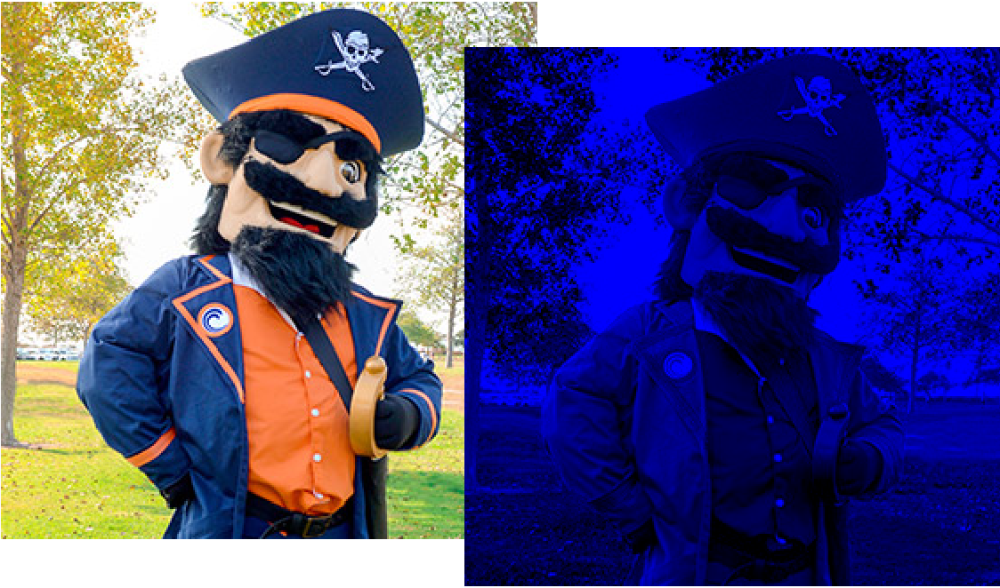

Dealing with Channels
Each individual pixel in our image consist of 3 bytes, each representing an individual red, green, or blue channel in that image. So, if you want to only modify one color, or two colors, you have to keep track of which byte you are working on, by processing all three bytes every time through the loop.
Here, for instance is a filter that only keeps the blue channel, and eliminates the red and green channels in the image:
while (beg != end)
{
*beg = 0; // turn off red
beg++; // go to next color
*beg = 0; // turn off green
beg++; // go to next color
beg++; // leave blue alone
}Here's the result of running the blue filter:

 This course content is offered under a
CC
Attribution Non-Commercial license. Content in this course
can be considered under this license unless otherwise noted.
This course content is offered under a
CC
Attribution Non-Commercial license. Content in this course
can be considered under this license unless otherwise noted.